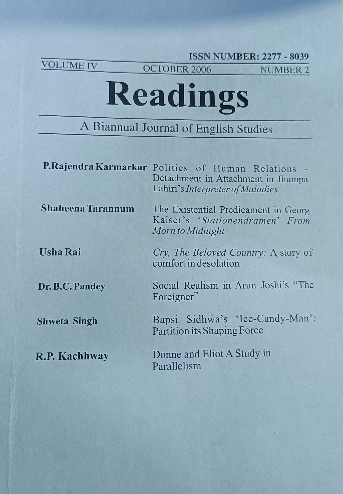

Volume IV | October 2006 | Number 2
Academic journal featuring literary criticism,
research papers and English studies articles.
₹199
Buy Now
Preview PDF
About This Journal
Readings is a biannual academic journal dedicated to
English literature, criticism, culture, language,
research and scholarly studies.
Featured Articles
- Politics of Human Relations - P. Rajendra Karmarkar
- The Existential Predicament - Shaheena Tarannum
- Cry, The Beloved Country - Usha Rai
- Social Realism in The Foreigner - Dr. B.C. Pandey
- Ice-Candy-Man: Partition Its Shaping Force - Shweta Singh
- Donne and Eliot: A Study in Parallelism - R.P. Kachhway
Why Buy This Journal?
- Premium Academic Content
- Research Material
- English Literature Studies
- PDF Download Access
- Lifetime Digital Copy
Reader Reviews
★★★★★ Excellent journal for literature students.
★★★★★ Valuable collection of research articles.
★★★★★ Highly recommended for academic study.
Contact Us
Email: readingsjournal@gmail.com
Phone: +91 9999912345
India